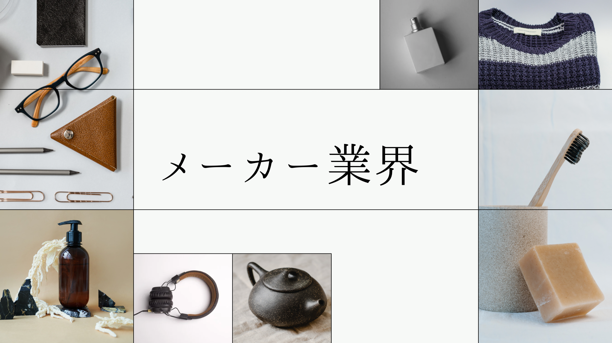

1月上旬/選考参加意思を人事にメールで伝えると、人事が所属研究室教授に選考参加の確認。教授から選考参加の許可を頂いた後、マイページ上で提出。

富士フイルムの選考体験記
エントリーシート
提出期日/提出方法
結果通知時期/通知方法
推薦応募に近く、みんな1次面接には進む。
研究テーマ（30字）と研究内容（300字）
臓器変位の学習に基づくX-ray画像からの三次元画像再構成
数週間にわたる放射線治療において日々変化する腫瘍位置に対応するために、治療初日に撮像されたCTを治療中に撮像可能なX-ray画像に合わせて変形することで、新たにCTを再構成する枠組みを開発している。腹部領域の柔軟臓器は局所的な変形を伴うため、従来のCT全体での大域的な変形では不十分である。そこで、治療前CTのボクセルごとの三次元方向の変位を学習することで臓器の局所変形に対応することを試みた。実験の結果、臓器の局所変形の推定により従来手法と比較して40%近く再構成性能が向上することを確認した。今後は腫瘍体積に着目した評価関数を導入することで、安全な治療に向けて高性能な画像再構成を目指す。
数週間にわたる放射線治療において日々変化する腫瘍位置に対応するために、治療初日に撮像されたCTを治療中に撮像可能なX-ray画像に合わせて変形することで、新たにCTを再構成する枠組みを開発している。腹部領域の柔軟臓器は局所的な変形を伴うため、従来のCT全体での大域的な変形では不十分である。そこで、治療前CTのボクセルごとの三次元方向の変位を学習することで臓器の局所変形に対応することを試みた。実験の結果、臓器の局所変形の推定により従来手法と比較して40%近く再構成性能が向上することを確認した。今後は腫瘍体積に着目した評価関数を導入することで、安全な治療に向けて高性能な画像再構成を目指す。
あなたの研究活動は、あなたの研究領域にどのような進歩をもたらしましたか？またその進歩のために、あなたはどのような形で貢献しましたか？（200字）
私は、腹部領域の低コントラストなX-ray画像から三次元画像を再構成する枠組みを初めて構築した。これにより、治療中の二次元X-ray画像から患者体内の三次元情報を取得し、それを元に患者に低負担な放射線治療を行える可能性を示唆した。
私は一連の研究を自らの手で行い、特に実験結果を幅広い視点から分析し、さらに放射線治療科の方と議論の場を設けていただくことで専門家の意見を取り入れ、課題を見つけて解決した。
私は一連の研究を自らの手で行い、特に実験結果を幅広い視点から分析し、さらに放射線治療科の方と議論の場を設けていただくことで専門家の意見を取り入れ、課題を見つけて解決した。
あなたが過去、努力して達成したと思うことは何ですか？（研究についてでも、それ以外でも構いません。あなたの取った行動がわかるようにお書きください。）（300字）
TOEICテストで960点を取得したことである。
アルバイト先で外国人の方に英語で上手く接客できなかった経験から自身の英語力に問題意識を持ち、将来はグローバルに働きたいという思いから900点取得を目標に2か月間学習を行った。この際、二つのことを意識して学習に取り組んだ。一つは、着実に点数を上げるために模試ごとに目標点数を設定し、単語力、速読力、リスニング力の三つの軸で課題を分析することである。もう一つは、一日三時間の学習を課し、時間がない時は他の日で埋め合わせをすることである。この経験から、課題を分解することで点数アップへ正確にアプローチし、目標達成に向けて粘り強く努力する力を身に付けた。
あなたが今までに直面した一番大きな困難は何ですか？その困難をどのように乗り越え、その経験はあなたの現在にどのように影響していますか？（300字）
所属サークルの慢性的な問題として会員数が減少していたことである。毎年40人程新入生を迎えるが、1年を通して約3割に減少していた。
私は、サークル全体の行事だけでは個々の新入生が埋もれてしまい十分に参加できていないことが問題ではないかと考え、新入生がサークルへの帰属意識を感じることを目的に、縦割りの班を作り各班で少人数での企画を打つよう提案した。私の班の企画後、それまであまり接点のなかった新入生と繋がりが生まれたように感じた。その結果、約半分の新入生が翌年もサークルに残ってくれるようになった。この経験から私は人や組織を動かすためには相手の立場に立って物事を考え、主体的に行動することを心掛けている。
私は、サークル全体の行事だけでは個々の新入生が埋もれてしまい十分に参加できていないことが問題ではないかと考え、新入生がサークルへの帰属意識を感じることを目的に、縦割りの班を作り各班で少人数での企画を打つよう提案した。私の班の企画後、それまであまり接点のなかった新入生と繋がりが生まれたように感じた。その結果、約半分の新入生が翌年もサークルに残ってくれるようになった。この経験から私は人や組織を動かすためには相手の立場に立って物事を考え、主体的に行動することを心掛けている。
あなたは、将来どんな技術者になりたいですか。応募理由と併せてご記入ください。（300字）
私は、将来人々の健康な暮らしに繋がる革新的な製品を開発する技術者になりたいと考えている。なぜなら、大学院での研究活動を通じて医療には不確かさを含む手術や、やむをえない侵襲的な治療などが存在することを知り、それをきっかけに患者と医師双方の負担を軽減するようなヘルスケア製品の開発に魅力を感じたからである。貴社のコア技術を活用し発展させることで全く新しい製品の開発に挑戦したいと思い応募した。特にヘルスケア領域では、私が研究活動で培った画像処理技術を活かす場があると感じており、状況を読んで相手の立場に立って考えることができるという自分の強みを活かして、お客様にご満足いただける製品の開発に挑戦したい。
希望する仕事についてご記入ください。（200字）
私はヘルスケア領域のメディカルシステム事業に携わりたいと考えている。具体的には、研究活動で培った医用画像処理の素養を活かして、AIを搭載した画像診断ソフトや画像処理ソフトの開発を行いたい。医師不足や超高齢化社会が社会課題として叫ばれる中で、今後AIによる医用画像処理は欠かせないものになると考える。そこで、医師による診断や治療を支援するというアプローチで社会課題の解決に貢献したいと考える。
長所（100字）
私の長所は課題解決のために粘り強く考える力である。特に研究活動では、考え抜いて試行錯誤することで問題を整理し目標に近づくことができると考える。また粘り強い思考は新たなアイデアに繋がると考えている。
短所（100字）
私の短所は少し完璧主義なことである。スライド作成時など、細部までこだわるあまり時間に追われてしまうことがある。そのため、まずは定めた時間内にある程度の水準まで完成させることを心掛けている。
趣味（50字）
ボルダリング。高校時代に部活で取り組んでおり、指一本のみでぶら下がることができるほど指を鍛えた。
座右の銘（100字）
私の座右の銘は、「為せば成る」である。私は、自分にはできないと決めつけることが一番良くないと感じており、弱気になり心が折れそうになるときも諦めずに勇気をもって挑戦しつづけることが重要であると考える。
注意した点
研究内容は事業内容とばっちりはまってたので、そのうえで「自分がどう考えているのか」が伝わるようにした。
（今見るとひどいESやで）
（今見るとひどいESやで）
WEBテスト
| 形式 | SPI（テストセンター） |
|---|---|
| 難易度・ボーダー | 1次面接までは自動で進めるので、そこまで重要ではない。 |
| 対策方法 | 対策していなかった。（あほか、絶対にすべきやで） |
自社テスト
形式
富士フイルムが作ったテスト
非言語多め。
非言語多め。
難易度・ボーダー
めっちゃ難しい。ただ、重要かは分からない。
対策方法
対策なし。笑えるほど解けなかった。（通常のSPIとか対策してたらまだ解けたはず）
研究概要書
| 形式 | A4一枚 |
|---|---|
| 難易度・ボーダー | 研究内容を図などを盛り込んで、簡潔かつ詳細に説明。 |
| 対策方法 | 添削してもらう。 |
1次面接
| 面接時期 | 1月中旬 |
|---|---|
| 面接時間 | 30分 |
| 面接官の人数・役職/学生の人数 | 技術採用人事1名/学生1名 |
| 結果通知時期/方法 | 1日後/電話 |
質問内容
自己紹介
富士フイルムの印象
ガクチカ2つについて深掘り
サークル内の立ち位置は？
短所のエピソードは？
画像処理がしたいの？
逆質問
富士フイルムの印象
ガクチカ2つについて深掘り
サークル内の立ち位置は？
短所のエピソードは？
画像処理がしたいの？
逆質問
注意した点・感想
とにかく笑顔で、素の自分が伝わるようにした。
終始明るい雰囲気での面接だった。（人事がめっちゃいい人）
会社との人柄のマッチングを見てる面接だと思う。研究内容については一切聞かれない。
この面接で会社名が「富士フィルム」でなく「富士フイルム」であることを知った。（遅いねん）
終始明るい雰囲気での面接だった。（人事がめっちゃいい人）
会社との人柄のマッチングを見てる面接だと思う。研究内容については一切聞かれない。
この面接で会社名が「富士フィルム」でなく「富士フイルム」であることを知った。（遅いねん）
アンケート
| 提出期日/提出方法 | 技術面接当日まで |
|---|
マイページ内のコンテンツについて、何か感想があればご記入ください。（200字）
貴社のマイページを通して、貴社の「技術」と「人」について知ることができました。会社説明動画やパンフレットからは貴社の技術と事業領域、製品について学ぶことができ、また社員紹介や内定者動画では、貴社の社員の方々がどのような理想と精神を携えて働いているのかを知ることができ、貴社にますます魅力を感じました。特にグループ合同セミナーでは社員の方の生の意見を聞くことができ、とても参考になりました。
マイページ内で、今後発信してほしいコンテンツがあればご記入ください。（200字）
アーカイブで視聴した貴社のグループ合同セミナーでは、各事業領域に焦点を当てて貴社の技術と社員の方々の考えを届けていただき、もっと見たいと感じていたため、もう一度そのようなコンテンツを発信していただけると嬉しく思います。
インターンシップの参加経験（社名、業界業種、期間、時期）についてご記入ください。
---
インターンシップ参加経験のある方の中で、印象に残っているコンテンツや、あればよいコンテンツなどがあればご記入ください（400字）
〇〇のインターンシップに参加した際に、社員の方からの会社説明に加えて、学生が「グリコってどんな会社？」という問いについて議論する場面がありました。その中で、企業理念や職種、商品などについてグループで議論し、意見をまとめて発表を行いました。それによって、企業理念から新規事業案まで学生自身が情報を整理して企業理解を深めることができたように感じ、印象に残っています。
その他、他社選考状況、他社内々定情報、就職活動を検討している業種、社名などあればご記入ください。（400字）
現在選考に参加している企業は貴社のみで、他社からの内々定も頂いておりません。
私は医療技術を通して人々の健康な生活に貢献したいという思いから、ヘルスケア領域で事業を展開しているメーカーを中心に就職活動を検討しています。具体的には、キャノンメディカルシステムズ株式会社、オリンパス株式会社、コニカミノルタ株式会社などの選考に参加させて頂くことを検討しています。しかし、その中でも卓越した画像技術とAI技術を融合させて、医師による診断や治療を支援する医用画像処理システムの開発を行っている貴社が第一志望です。
私は医療技術を通して人々の健康な生活に貢献したいという思いから、ヘルスケア領域で事業を展開しているメーカーを中心に就職活動を検討しています。具体的には、キャノンメディカルシステムズ株式会社、オリンパス株式会社、コニカミノルタ株式会社などの選考に参加させて頂くことを検討しています。しかし、その中でも卓越した画像技術とAI技術を融合させて、医師による診断や治療を支援する医用画像処理システムの開発を行っている貴社が第一志望です。
注意した点
ゴマすりすり。
第一志望ですってことを伝えた。
第一志望ですってことを伝えた。
2次面接（技術面接）
| 面接時期 | 1月下旬 |
|---|---|
| 面接時間 | 30分 |
| 面接官の人数・役職/学生の人数 | 技術採用人事1名＆技術系社員5人/学生1名 |
| 結果通知時期/方法 | 1日後/電話 |
形式
オンライン
医療/画像処理専門の技術系社員5名の前で、事前に用意したスライドを用いて7分間で研究内容をプレゼン
その後、プレゼンやES、研究概要書を元に、研究内容について技術系社員から5人×2回質問が来る。
医療/画像処理専門の技術系社員5名の前で、事前に用意したスライドを用いて7分間で研究内容をプレゼン
その後、プレゼンやES、研究概要書を元に、研究内容について技術系社員から5人×2回質問が来る。
質問内容
自己紹介と研究室紹介
研究発表7分程度
放射線治療に重点を置いた説明
ESで放射線治療科の先生と議論したみたいなこと書いてありますけど，これによってどういうことが分かりましたか？
臨床現場でどれだけ価値がある研究なのか？臨床で使うことはできるのか？
参考にしている手法はありますか？
ネットワークを0から作り出しているのか，それとも組み合わせて1手法としているのか？
この研究はあなたが始めたものですか？それもと研究室の先輩の引継ぎ？
etc.
なぜこの研究室を選んだのか
逆質問
研究発表7分程度
放射線治療に重点を置いた説明
ESで放射線治療科の先生と議論したみたいなこと書いてありますけど，これによってどういうことが分かりましたか？
臨床現場でどれだけ価値がある研究なのか？臨床で使うことはできるのか？
参考にしている手法はありますか？
ネットワークを0から作り出しているのか，それとも組み合わせて1手法としているのか？
この研究はあなたが始めたものですか？それもと研究室の先輩の引継ぎ？
etc.
なぜこの研究室を選んだのか
逆質問
注意した点・感想
発表スライドは、専門の人でなくても分かるように作成した。
社会（臨床）の課題と、本研究の位置づけを意識した。
想定質問（代替手法など）に対する回答用のスライドを追加で作成した。
専門外の社員もいるので、質問の意図が分からないときは聞き返した。
前回の面接をは打って変わって厳かな雰囲気で面接が進む。この面接が一番の関門のように思う。雰囲気にのまれずに笑顔を忘れず、落ち着いて答えることが重要。
社会（臨床）の課題と、本研究の位置づけを意識した。
想定質問（代替手法など）に対する回答用のスライドを追加で作成した。
専門外の社員もいるので、質問の意図が分からないときは聞き返した。
前回の面接をは打って変わって厳かな雰囲気で面接が進む。この面接が一番の関門のように思う。雰囲気にのまれずに笑顔を忘れず、落ち着いて答えることが重要。
対策イベント！
アンケート＆最終面接
| 面接時期 | 2月上旬 |
|---|---|
| 面接時間 | 20分（30分の予定が巻いて終わった） |
| 面接官の人数・役職/学生の人数 | 技術採用人事1人＆役員・研究所所長3人/学生1人（対面） |
| 結果通知時期/方法 | 当日/電話 |
アンケート内容
文章完結系のアンケートを面接前に20分程度で回答する
私の誇れる部分は，
1人1人に合ったコミュニケーションを取れる。
周囲から見た私は，
「周囲を考えて行動することができる人」
私は一つの課題に対して，
粘り強く取り組む．
私はたいてい，
人との話し合いによって決断する
幼少期の親からの教えは，
「ありがとう」を言いなさい．
私の夢は，
世界の健康寿命を延ばす
人の優れた能力を見た時，
自分もその能力を身に付けたいと思う．関西に来て，話のオチを意識するようになった．
人生で一番の失敗は，
野球をあきらめたこと．何かを諦めるとどうしても悔いが残る．そうならないためにも自分の可能性を限定せずに挑戦することが私のモットー．
etc.
私の誇れる部分は，
1人1人に合ったコミュニケーションを取れる。
周囲から見た私は，
「周囲を考えて行動することができる人」
私は一つの課題に対して，
粘り強く取り組む．
私はたいてい，
人との話し合いによって決断する
幼少期の親からの教えは，
「ありがとう」を言いなさい．
私の夢は，
世界の健康寿命を延ばす
人の優れた能力を見た時，
自分もその能力を身に付けたいと思う．関西に来て，話のオチを意識するようになった．
人生で一番の失敗は，
野球をあきらめたこと．何かを諦めるとどうしても悔いが残る．そうならないためにも自分の可能性を限定せずに挑戦することが私のモットー．
etc.
面接内容
研究内容、パーソナリティ、事前アンケートの内容を元に質問される。
アイスブレイク
l 企業に来るのは初めて？
l 東京に来ることもあまりないでしょ？
l 新幹線乗るのも久しぶりだったでしょう
質問
l 福岡から京都に来たということですが，なぜ京大を目指したのか
l TOEIC960点高いね，なぜTOEICに取り組もうと思ったの？．
l 結果的にどうなった？
l 富士フイルムを目指すようになったのはいつから？
l インターン経験について，コニカミノルタは分かるけどグリコ，ソフトバンクはなぜインターンに参加したの？どういうことしたの？．
l インターンに参加した感想は？
l グリコの食による予防医学の用には進まなかったの？
l 研究内容を1~2分で説明してください
l 三次元方向の変位ってどうやって出してるの？手法を詳しく
l CTとDRRの間で整合性はあるの？
l 「他の人の優れた能力を見たら自分をそういう風になりたいと思う．関西に来て自分もオチのある話をしたいと思うようになった」と書いてるけど，できるようになった？
l 負けず嫌いでしょ？
l 完璧主義のエピソード
l 高校時代に挫折した経験はある？
l 「為せば成る」が研究で活かされたことはある？．
l 弊社の製品についてご存じですか？
l もし志望部署に配属されないまたは異動になったら，他に興味のあることはある？
l やっぱりヘルスケアはしたい？
l 企業研究をなさっていると思うので，あなたから見た富士フイルムはどんな企業か教えてください
逆質問
アイスブレイク
l 企業に来るのは初めて？
l 東京に来ることもあまりないでしょ？
l 新幹線乗るのも久しぶりだったでしょう
質問
l 福岡から京都に来たということですが，なぜ京大を目指したのか
l TOEIC960点高いね，なぜTOEICに取り組もうと思ったの？．
l 結果的にどうなった？
l 富士フイルムを目指すようになったのはいつから？
l インターン経験について，コニカミノルタは分かるけどグリコ，ソフトバンクはなぜインターンに参加したの？どういうことしたの？．
l インターンに参加した感想は？
l グリコの食による予防医学の用には進まなかったの？
l 研究内容を1~2分で説明してください
l 三次元方向の変位ってどうやって出してるの？手法を詳しく
l CTとDRRの間で整合性はあるの？
l 「他の人の優れた能力を見たら自分をそういう風になりたいと思う．関西に来て自分もオチのある話をしたいと思うようになった」と書いてるけど，できるようになった？
l 負けず嫌いでしょ？
l 完璧主義のエピソード
l 高校時代に挫折した経験はある？
l 「為せば成る」が研究で活かされたことはある？．
l 弊社の製品についてご存じですか？
l もし志望部署に配属されないまたは異動になったら，他に興味のあることはある？
l やっぱりヘルスケアはしたい？
l 企業研究をなさっていると思うので，あなたから見た富士フイルムはどんな企業か教えてください
逆質問
注意した点・感想
想定質問をワンキャリの選考体験記を参考にリストアップして、すべてに回答を作成して臨んだ。
小さいころからのエピソードを聞かれると書いていたので、幼少期～高校までエピソードを整理した
事前アンケートは、面接官がもっと聞きたいと思えるような内容を意識した。
志望理由を「なぜ富士フイルムなのか」まで用意した
企業研究を製品理解の粒度までしっかり行った。
面接開始時は厳かな雰囲気だったが、進むにつれて柔らかい雰囲気になっていった。
小さいころからのエピソードを聞かれると書いていたので、幼少期～高校までエピソードを整理した
事前アンケートは、面接官がもっと聞きたいと思えるような内容を意識した。
志望理由を「なぜ富士フイルムなのか」まで用意した
企業研究を製品理解の粒度までしっかり行った。
面接開始時は厳かな雰囲気だったが、進むにつれて柔らかい雰囲気になっていった。
内定
| 内定時期 | 2月上旬 |
|---|---|
| 承諾検討期間 | なし |
| 承諾or辞退 | 承諾 |
承諾or辞退理由
第一志望だった（すべての軸において一位だった）
自分のやりたいこととマッチしている
将来性あり
技術職の中ではトップクラスの年収
勤務地が東京（悪くて神奈川）
自分のやりたいこととマッチしている
将来性あり
技術職の中ではトップクラスの年収
勤務地が東京（悪くて神奈川）
内定者属性（大学とか文理とか）
旧帝大＋早慶東工など
選考全体の感想
内定先に興味を持ったきっかけ
ヘルスケア事業が急成長
どういった基準でこの企業を選んだか
事業内容（AIを医療に積極的に取り入れている、医療機器はもちろん、医療システムに強み）
給料が高い
勤務地がド田舎じゃない
給料が高い
勤務地がド田舎じゃない
選考を通して重要視されたと感じた点
自分の研究への理解
企業理解、志望度
人柄、マインド
企業理解、志望度
人柄、マインド
同業他社と比べてこの企業の魅力は？
医療システムでトップシェア
多分野で高い技術力（画像、機器、情報、化学など幅広い）
ヘルスケアの全領域をカバー
年収高い
多分野で高い技術力（画像、機器、情報、化学など幅広い）
ヘルスケアの全領域をカバー
年収高い
この企業を受けるにあたって工夫した点
「なぜ御社なのか」を言語化する
企業理解と熱意が必要
人柄のアピール
企業理解と熱意が必要
人柄のアピール
社員（と内定者）にどのような印象を持ったか
社員は明るく面白い人が多い
同期はコミュ力高い
同期はコミュ力高い
後輩へのアドバイス
技術職だけど、良い意味で技術職っぽくない人が多いです（しっかり人柄見られてる）。研究はもちろん重要ですが、社交性や人との接し方などの個性をアピールすることが大切だと思います。
入念な企業研究が必要です。「なぜ富士フイルムなのか」をアピールしましょう。
一般選考の倍率はめちゃくちゃ高いですけど、奨学生選考もしくは推薦だと受かる可能性は十分にあります。
入念な企業研究が必要です。「なぜ富士フイルムなのか」をアピールしましょう。
一般選考の倍率はめちゃくちゃ高いですけど、奨学生選考もしくは推薦だと受かる可能性は十分にあります。